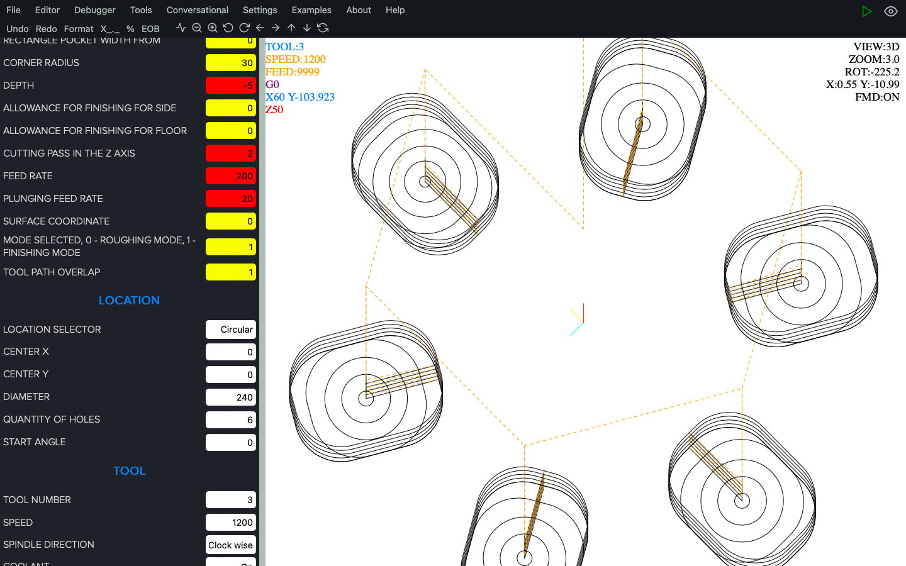
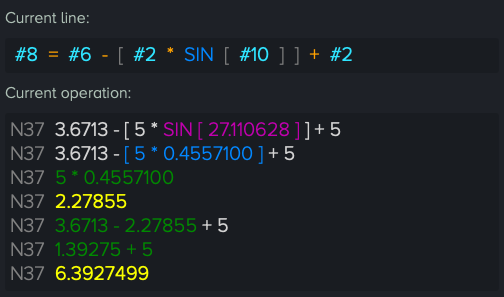
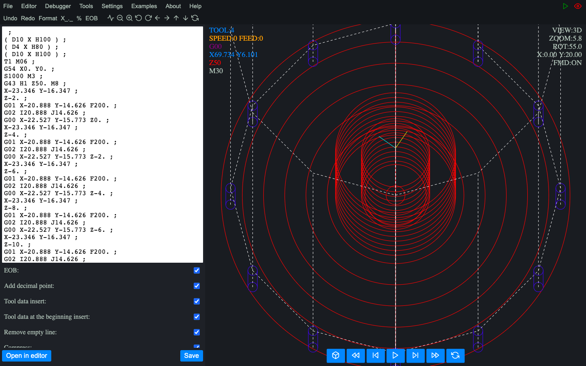

FANUC
HAAS
SINUMERIK 802D
MAZAK ISO
CENTROID
Why Macro Simulator CNC?
- Fanuc Macro B / Haas / Centroid support
- support for many standard system variables used by Fanuc Macro B
- buy once (no time limit, no subscription, no account)
- used and tested by professionals around the world
- support for multiple Fanuc / Haas cycles
- conversational mode allows you to create programs without typing code manually
- convert your program written with Fanuc / Haas / Centroid macros to pure g-code
- use built-in cycles to create programs faster and more efficiently
- see line-by-line evaluation of arithmetic and logical operations
- keeps data in code editor even if you lost electricity
- in-depth code review
- lightweight - takes up less than 2 MB of hard disk space
- multi-system - runs on multiple operating systems
- works offline
Trusted by specialists from:
Features
Conversational shell

Use conversational shell to create CNC programs quickly for the most repetitive tasks without coding
Read more >
Macro analyzing tool

Take advantage of the view of all math and logic operations one by one
Read more >
Compatibility

Works with a large number of the most popular CNC controls, such as:Fanuc,
Haas, Centroid,
Mazak ISO or Siemens 802D
Read more >
CNC program export & compression

Export and compress CNC programs to pure g code and run them on multiple CNC machines
Read more >
Multiplatform

Works on Windows, MacOS, Linux, Android and IOS.Work on any device you want
Lightweight

Hard disk space low? Macro Simulator CNC does not need much. It takes less than 2MB (tested on MacOS)